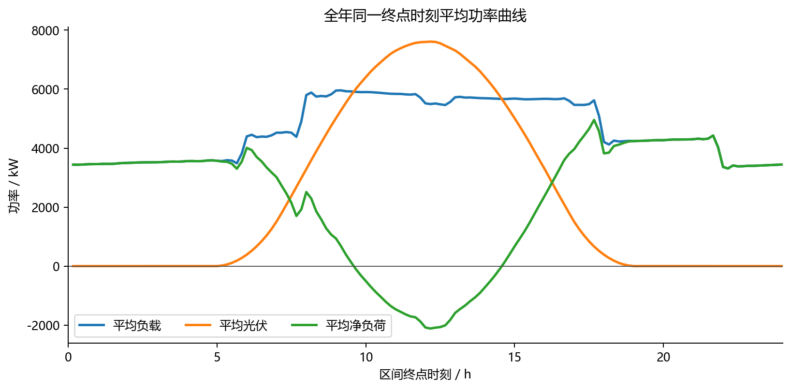
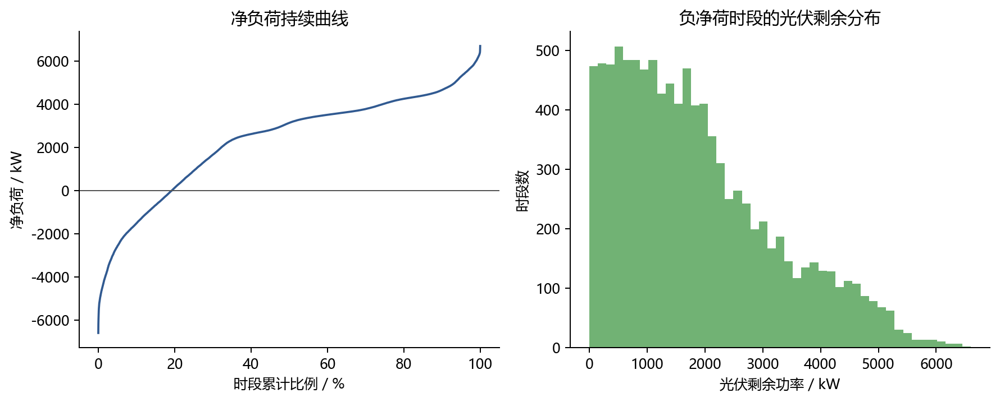
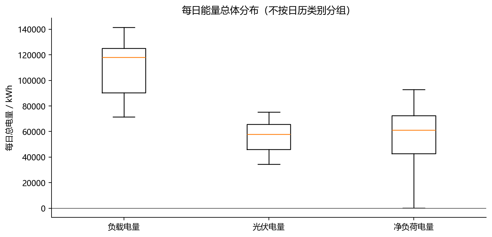
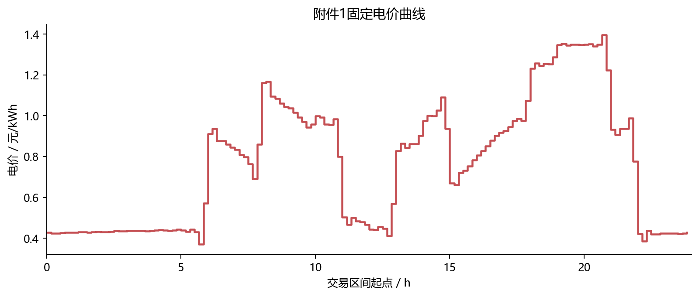
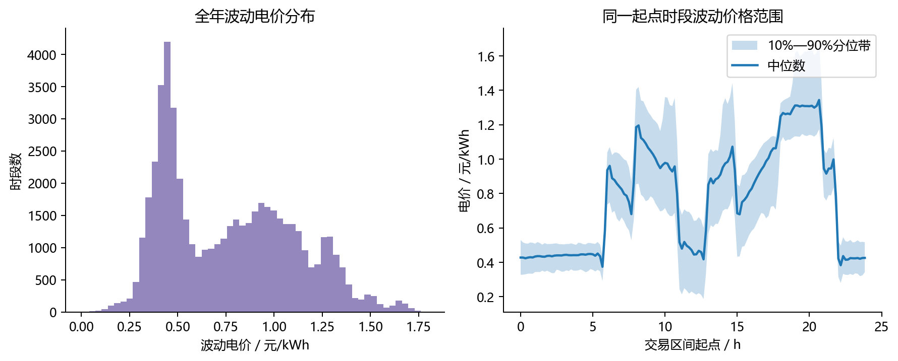
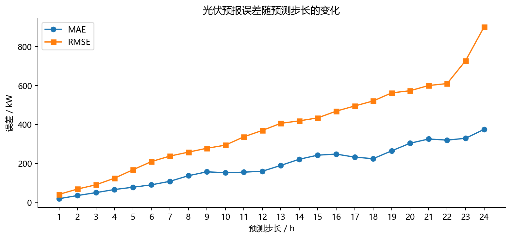
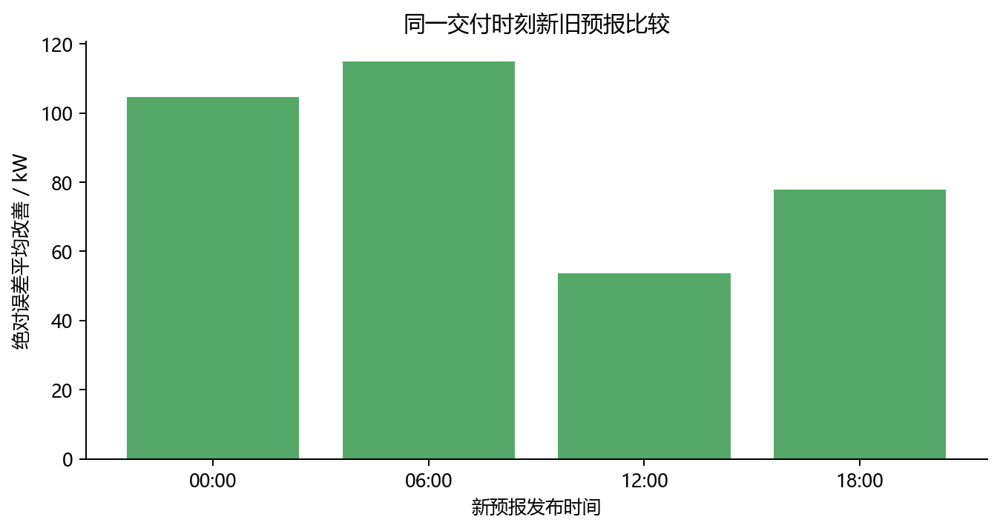
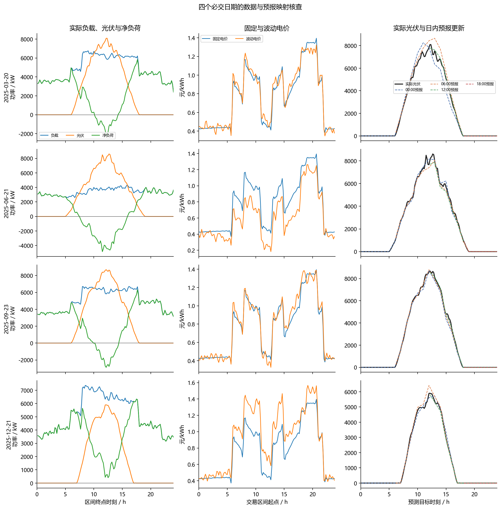

数据预处理与前置分析报告
1. 数据契约与质量结论
日历物理区间主表共 52,560 条记录，正式结果期共 48,096 个10分钟物理区间。质量检查共 29 项，失败项为 0。
| check_id | status | observed | expected | details |
|---|---|---|---|---|
| source_table_dimensions | PASS | {'attachment_1': (144, 4), 'attachment_2_load': (365, 145), 'attachment_2_pv': (365, 145), 'attachment_3': (1460, 26), 'attachment_4': (365, 145)} | {'attachment_1': (144, 4), 'attachment_2_load': (365, 145), 'attachment_2_pv': (365, 145), 'attachment_3': (1460, 26), 'attachment_4': (365, 145)} | 五张源数据表的行列数符合数据契约 |
| dispatch_row_count | PASS | 52560 | 52560 | 全年日历物理区间主表行数 |
| hourly_forecast_row_count | PASS | 35040 | 35040 | 附件3小时长表行数 |
| ten_min_forecast_row_count | PASS | 210240 | 210240 | 线性插值后的10分钟预报行数 |
| baseline_row_count | PASS | 52560 | 52560 | 日初基线预报行数 |
| dispatch_primary_key | PASS | True | True | plan_date与slot_index组合键唯一 |
| forecast_primary_key | PASS | True | True | issue_ts与horizon_10min组合键唯一 |
| daily_slot_completeness | PASS | min=144, max=144 | all=144 | 每个源日期均含144个日历物理区间 |
| ten_minute_continuity | PASS | [10.0] | [10.0] | 同一源日期相邻区间起点间隔恒为10分钟 |
| calendar_day_boundaries | PASS | True | True | 源日期覆盖00:00至次日00:00的144个物理区间 |
| load_pv_endpoint_semantics | PASS | True | True | 负荷与光伏观测时刻严格等于对应物理区间终点 |
| price_start_semantics | PASS | True | True | 购电价格时刻严格等于对应物理区间起点 |
| template_mapping | PASS | True | True | 日历物理区间到正式结果模板采用明确的日期与行号映射 |
| actual_numeric_finite | PASS | True | True | 负荷、光伏、净负荷与固定电价字段无空值或无穷值 |
| variable_price_availability | PASS | 52559 | 52559 | 波动电价可用性标志与源数据覆盖范围一致 |
| forecast_numeric_finite | PASS | True | True | 小时及10分钟光伏预报无空值或无穷值 |
| baseline_numeric_finite | PASS | True | True | 日初负载与光伏基线无空值或无穷值 |
| source_values_nonnegative | PASS | True | True | 负载、光伏和两类电价非负；净负荷允许为负 |
| power_energy_conversion | PASS | True | True | 10分钟电量严格等于功率乘以1/6 |
| fixed_price_alignment | PASS | True | True | 固定价格按物理区间起点与附件1时刻标签对齐 |
| variable_price_alignment | PASS | True | True | 波动价格按物理区间起点与附件4时刻标签对齐 |
| hourly_issue_structure | PASS | {0: 365, 6: 365, 12: 365, 18: 365} | {0,6,12,18}:365 each; 24 horizons | 每个发布时间均含24个步长 |
| hourly_target_mapping | PASS | True | True | 预测目标时刻等于发布时间加预测步长 |
| interpolation_anchor_fidelity | PASS | True | True | 每个整点插值严格还原附件3小时预报 |
| interpolation_nonnegative | PASS | 0.0 | >=0 | 插值结果非负 |
| result_period_count | PASS | 48096 | 48096 | 正式结果期日历物理区间数 |
| baseline_daily_completeness | PASS | min=144, max=144 | all=144 | 每日基线含144个时段 |
| baseline_causality | PASS | True | True | 训练来源计划日期严格早于发布时间 |
| key_dates_extractable | PASS | 576 | 576 | 四个必交日期均可无歧义提取 |
原始数据登记
| attachment | file | size_bytes | sha256 | sheet | data_rows | data_columns |
|---|---|---|---|---|---|---|
| attachment_1 | 附件/附件1.xlsx | 16003 | 66b87134f5ecccd68184d3539bb1293ef039f9e0fdd955a589b9bfa7f227c377 | Sheet1 | 144 | 4 |
| attachment_2 | 附件/附件2.xlsx | 907128 | 2e95fd446bfafa0d8c59577b5c2e2ea8b3f1def20dde54a3062556f4da9b4c72 | 小区负载 | 365 | 145 |
| attachment_2 | 附件/附件2.xlsx | 907128 | 2e95fd446bfafa0d8c59577b5c2e2ea8b3f1def20dde54a3062556f4da9b4c72 | 光伏发电实际功率 | 365 | 145 |
| attachment_3 | 附件/附件3.xlsx | 293526 | 8a61b06c52bd0d639a1cc37c61a7d9f5b75edcbca718f64c1bd3498ec9f9d843 | Sheet1 | 1460 | 26 |
| attachment_4 | 附件/附件4.xlsx | 409790 | 20e9c93aeab5e8e21ae4dd15587f9e190f7408692504c1319598461cd654fe71 | Sheet1 | 365 | 145 |
2. 代表性日与全年数据关系
附件1与全年数据按统一物理时刻比较：负荷和光伏记录对应10分钟区间终点，购电价格对应区间起点。负载及电价差异仅体现源表精度，光伏差异集中于黎明、傍晚的小功率区间，说明附件1适合作为问题1的确定性代表日，并为问题1—3提供固定价格；后续实际运行与预测评价仍以附件2—4为准。
| 指标 | 平均绝对差 | 最大绝对差 |
|---|---|---|
| 负载 | 0.0000 | 0.0001 |
| 光伏 | 0.0009 | 0.0431 |
| 电价 | 0.0000 | 0.0001 |
3. 负载、光伏与净负荷
1,995.72—7,978.88 kW
0.00—10,216.20 kW
-6,601.99—6,687.75 kW
光伏高于负载的时段占比为 19.27%，对应全年光伏剩余电量为 3,120,221.00 kWh。负净荷作为有效运行状态保留，未进行截断。
| 序列 | 峰值时段 | 峰值_kW |
|---|---|---|
| 平均负载 | 09:10 | 5,958.9696 |
| 平均光伏 | 12:10 | 7,612.3160 |
| 平均净负荷 | 17:40 | 4,956.4995 |



4. 电价特征
固定电价与波动电价均按交易区间起点对齐，波动电价保留逐日逐时段差异。前置分析仅讨论其分布、时段范围及与供需变量的统计关系，不据此预判优化策略。
| 指标 | 数值 |
|---|---|
| 波动电价—负载相关系数 | 0.4959 |
| 波动电价—光伏相关系数 | 0.0298 |
| 波动电价—净负荷相关系数 | 0.2516 |
| 高价与高净负荷同时出现比例 | 0.0328 |
| 固定电价变异系数 | 0.4089 |
| 波动电价变异系数 | 0.4446 |


5. 光伏预报质量
误差定义为预测值减实际值，并仅在预测目标时刻存在对应实际观测时计算。可评价样本的总体 MAE 为 186.61 kW，RMSE 为 438.56 kW，偏差为 -30.76 kW。
| 发布时间 | 样本数 | MAE_kW | 偏差_kW | 非零光伏MAE_kW |
|---|---|---|---|---|
| 00:00 | 8760 | 181.3133 | -25.5900 | 362.7094 |
| 06:00 | 8754 | 97.4838 | -7.4705 | 194.8786 |
| 12:00 | 8748 | 207.8655 | -36.4472 | 415.8261 |
| 18:00 | 8742 | 259.8928 | -53.5797 | 520.1427 |

新旧预报价值采用同一交付时刻配对比较，避免不同发布时间覆盖的昼夜结构差异造成混淆。绝对误差改善定义为旧预报绝对误差减去新预报绝对误差。
| new_issue_time | comparison_count | prior_mae_kw | new_mae_kw | mean_abs_error_gain_kw | improvement_ratio | mean_lead_reduction_hours |
|---|---|---|---|---|---|---|
| 00:00 | 6552 | 346.7617 | 242.0674 | 104.6942 | 0.4098 | 6.0000 |
| 06:00 | 6570 | 240.8254 | 125.9687 | 114.8568 | 0.4527 | 6.0000 |
| 12:00 | 6564 | 78.8037 | 25.1678 | 53.6359 | 0.2581 | 6.0000 |
| 18:00 | 6558 | 254.4548 | 176.5483 | 77.9065 | 0.2153 | 6.0000 |

6. 四个必交日期核查
| plan_date | interval_count | load_energy_kwh | pv_energy_kwh | net_load_energy_kwh | pv_surplus_energy_kwh | load_peak_kw | pv_peak_kw | net_load_peak_kw | fixed_price_min | fixed_price_max | variable_price_min | variable_price_max | midnight_pv_forecast_mae_kw | forecast_issue_count | evaluated_forecast_points | first_interval_start | last_interval_start |
|---|---|---|---|---|---|---|---|---|---|---|---|---|---|---|---|---|---|
| 2025-03-20 | 144 | 117,648.3817 | 55,439.4199 | 62,208.9618 | 3,910.8767 | 6,757.8100 | 8,090.5707 | 5,838.5445 | 0.3713 | 1.3952 | 0.3484 | 1.3228 | 283.6109 | 4 | 360 | 2025-03-20 | 2025-03-20 23:50:00 |
| 2025-06-21 | 144 | 81,408.0648 | 62,073.3244 | 19,334.7404 | 20,959.2861 | 4,317.2602 | 8,605.7877 | 4,004.9442 | 0.3713 | 1.3952 | 0.1828 | 1.2633 | 99.6935 | 4 | 360 | 2025-06-21 | 2025-06-21 23:50:00 |
| 2025-09-23 | 144 | 121,182.2813 | 59,065.6658 | 62,116.6156 | 6,478.2955 | 6,704.9712 | 8,690.3915 | 6,311.1760 | 0.3713 | 1.3952 | 0.3271 | 1.3866 | 116.8265 | 4 | 360 | 2025-09-23 | 2025-09-23 23:50:00 |
| 2025-12-21 | 144 | 124,376.4410 | 35,338.6591 | 89,037.7819 | 0.0000 | 7,367.0100 | 5,904.8948 | 6,338.7700 | 0.3713 | 1.3952 | 0.3905 | 1.5659 | 60.8440 | 4 | 360 | 2025-12-21 | 2025-12-21 23:50:00 |

7. 数据使用边界
日初基线在 2025-01-01 使用附件1，随后仅使用决策时刻之前已经完成的同终点时刻观测；第8日起固定使用最近7个完整日。问题3与问题4-3中，负载预测固定为0:00版本，光伏可在0:00、6:00、12:00、18:00按附件3更新。实际同日负载与光伏仅供执行仿真、结算和回测使用。
8. 异常标记
采用 Tukey 外围栏（低于 Q1−3IQR 或高于 Q3+3IQR）形成统计标记，共识别 0 条记录。该标记仅用于提示复核，不等同于数据错误；所有原值均保留，未删除、平滑或缩尾。
未发现外围栏标记。
完整标记见 tables/anomaly_flags.csv；其他机器可读结果见 quality_report.json、quality_checks.csv 与 tables/。